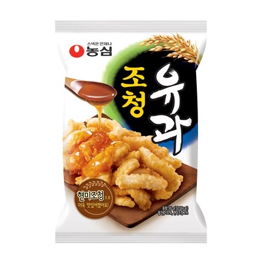

조청유과
농심 조청유과 — 조청 바른 전통 유과 스낵.
조청유과는 농심이 만든 유과 스낵으로, 조청의 달콤함과 바삭한 식감이 특징입니다. 한과를 부담 없이 맛보고 싶을 때 마트에서 사기 좋습니다.
바삭해서 잘 부서지므로 캐리어 위쪽보다 옷 사이에 넣으세요. 단맛이 있어 차와 잘 맞습니다.
조청유과는 농심이 만든 유과 스낵으로, 조청의 달콤함과 바삭한 식감이 특징입니다. 한과를 부담 없이 맛보고 싶을 때 마트에서 사기 좋습니다.
바삭해서 잘 부서지므로 캐리어 위쪽보다 옷 사이에 넣으세요. 단맛이 있어 차와 잘 맞습니다.
사는 팁
구매 팁 농심 과자 코너·대형마트에서 구하세요.